One object, many processes
A technology is rarely one thing. A gas plant built in 2025 is not the plant you build in 2035: it costs more and burns more fuel for the same electricity. Wind is not one resource but a handful of site grades, the best ones finite. A transmission corridor is not one line but a stack of tranches, each with its own losses.
energyRt writes all three with the same mechanism. One object declares a family, and at interpolation it is expanded into one ordinary process per member – so the solver sees plain processes and every equation stays as it is. The family has two axes:
| axis | slot | what a member is | ordered? |
|---|---|---|---|
| vintage | @vintage |
a build year, with its own costs and efficiency | yes, by year |
| cluster | @cluster |
a parallel part that exists at the same time as its siblings | only by convention (order) |
The distinction is worth getting right at the start: vintages are sequential, clusters are simultaneous. Vintages differ in when they were built; clusters differ in what they are – a grade, a site class, a tranche, a fleet type.
A member’s name carries its provenance, so solver output, reports and levies all refer to something you can read:
PP + vintage 2035 -> PP_VIN2035
EWIN + cluster 01 -> EWIN_CL01
ECOA + vintage 2030 + cluster CCS -> ECOA_VIN2030_CLCCSThe prefixes are model-wide settings (_VIN and
_CL by default), since they become solver set-member
names:
Cluster labels are zero-padded ordinals
("01", "02", …) for resource tiers. Two
reasons: the same token then ties every object of one tier together
(WWIN_CL01, LAND_CL01,
RES_LAND_CL01, EWIN_VIN2040_CL01), and 40
tiers sort 01..40 instead of 1, 10, 11, 2.
What a tier means goes in desc, where it cannot be
parsed back out of a name by mistake.
Every example below is a complete model you can paste and run,
written out in full rather than wrapped in a helper, so each one stands
alone. Each carries a deliberately expensive newImport() as
a backstop: it is never used in the solutions shown, and it is there so
the examples stay feasible if you change a bound while reading.
cal <- newCalendar(
timetable = make_timetable(
struct = list(ANNUAL = "ANNUAL", SEASON = c("WIN", "SUM"))),
name = "two_seasons")Vintages: the same plant, built later
@vintage declares the build years a technology comes in,
and the other slots carry a vintage column saying which
member a row belongs to. Here the 2035 vintage is cheaper to build
and more efficient – the ordinary case for any technology still
on a learning curve:
PP <- newTechnology(
name = "PP",
desc = "Gas plant, two build vintages",
input = data.frame(comm = "GAS", unit = "PJ"),
output = data.frame(comm = "ELC", unit = "GWh"),
vintage = data.frame(
vintage = c("2025", "2035"),
start = c(2025, 2035), # first year this vintage may be BUILT
end = 2050, # last year it may be built
olife = 30L # operational life, once built
),
ceff = data.frame(
vintage = c("2025", "2035"),
comm = "ELC",
cact2cout = c(0.40, 0.55) # GWh out per GWh of fuel in
),
invcost = data.frame(
vintage = c("2025", "2035"),
invcost = c(1200, 900) # MUSD/GW
),
capacity = data.frame(cap.up = 400), # GW; no vintage column: both members
cap2act = 8.76 # GW -> GWh/year
)draw() sketches what was just declared, before any model
is built:
draw(PP)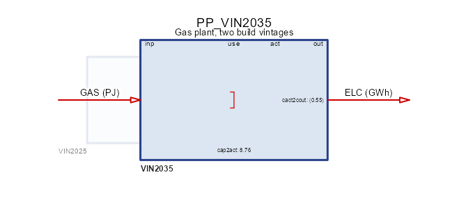
One box, because the vintages share a structure: same fuel in, same
commodity out. What differs is the data, which is what
autoplot() shows – one series per member, over the years
each one may be built in:
autoplot(object = PP)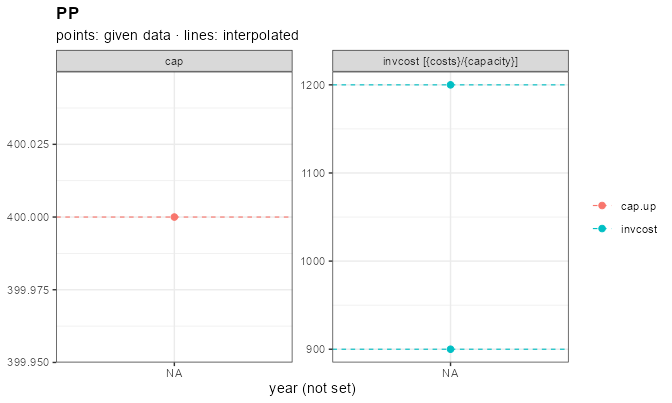
Three things in that declaration are worth naming.
start/end are an investment
window, not a lifetime: they say when the vintage may be
built, while olife says how long it then runs. The
windows may overlap, as they do here – from 2035 both vintages are
buildable and the model chooses.
capacity carries no
vintage column, so its row applies to every member. That is
the general rule for every slot: a selector column left NA
broadcasts to all variants, so you name a vintage only where the members
actually differ.
Units are stated on both flows and the conversion is explicit:
cap2act = 8.76 turns a capacity in GW into GWh per year, so
invcost reads MUSD/GW and the levelized costs later in this
article come out in USD/MWh.
GAS <- newCommodity(name = "GAS", timeframe = "ANNUAL", unit = "PJ")
ELC <- newCommodity(name = "ELC", timeframe = "SEASON", unit = "GWh")
SUP_GAS <- newSupply(
name = "SUP_GAS",
commodity = "GAS",
supply = data.frame(cost = 4) # MUSD/PJ
)
IMP_ELC <- newImport(
name = "IMP_ELC",
commodity = "ELC",
import = data.frame(price = 5000) # backstop, never economic
)
DEM_GROW <- newDemand(
name = "DEM_ELC",
commodity = "ELC",
demand = data.frame(year = c(2025, 2050), demand = c(18, 30)) # GWh/slice
)
repo_vin <- newRepository(
name = "repo_vin",
GAS, ELC, SUP_GAS, IMP_ELC, DEM_GROW, PP
)
mod_vin <- newModel(
name = "art_vintage",
repo = repo_vin,
calendar = cal,
region = "R1",
horizon = newHorizon(seq(2025, 2050, by = 5)),
discount = 0.05
)
scen_vin <- solve_model(
object = mod_vin,
name = "art_vintage",
ondisk = FALSE,
overwrite = TRUE,
echo = FALSE
)
getVariants(scen_vin)
#> name class base vintage cluster
#> 1 PP_VIN2025 technology PP 2025 <NA>
#> 2 PP_VIN2035 technology PP 2035 <NA>getVariants() is the provenance table: every expanded
process, its class, the object it came from, and its coordinates on the
two axes. It is the map between what you declared and what the solver
saw.
Now the investment decision itself:
newcap <- getData(scen_vin, name = "vTechNewCap", merge = TRUE)
newcap <- as.data.frame(newcap)
built <- newcap[newcap$value > 1e-6, c("tech", "year", "value")]
head(built, 8) # GW
#> tech year value
#> 1 PP_VIN2025 2025 10.2739726
#> 2 PP_VIN2025 2026 0.2739726
#> 3 PP_VIN2025 2027 0.2739726
#> 4 PP_VIN2025 2028 0.2739726
#> 5 PP_VIN2025 2029 0.2739726
#> 6 PP_VIN2025 2030 0.2739726
#> 7 PP_VIN2025 2031 0.2739726
#> 8 PP_VIN2025 2032 0.2739726The 2025 vintage builds 90 GW up front and tops up as demand grows; from 2035 every addition is the newer vintage, because it is both cheaper and more efficient. Nothing retires mid-horizon and the backstop stays idle – the whole story is “which vintage gets the next increment”.
To report per axis rather than per process,
variantSummary() folds the members back along the axis you
ask for:
vs <- variantSummary(
object = scen_vin,
name = "vTechNewCap",
by = "vintage"
)
head(as.data.frame(vs), 4)
#> base vintage region year n total mean sd min max
#> 1 PP 2025 R1 2025 1 10.2739726 10.2739726 NA 10.2739726 10.2739726
#> 2 PP 2025 R1 2026 1 0.2739726 0.2739726 NA 0.2739726 0.2739726
#> 3 PP 2025 R1 2027 1 0.2739726 0.2739726 NA 0.2739726 0.2739726
#> 4 PP 2025 R1 2028 1 0.2739726 0.2739726 NA 0.2739726 0.2739726It returns n, total, mean,
sd, min and max per group rather
than a bare value, because a family is a set and “the”
value of a set is a choice you should make explicitly.
Clusters: parallel parts of one family
A cluster member exists alongside its siblings. The canonical case is a resource in grades: the best wind sites are cheap and few, the poor ones are plentiful and expensive, and each grade has its own ceiling.
EWIN <- newTechnology(
name = "EWIN",
desc = "Wind, three site grades",
output = data.frame(comm = "ELC", unit = "GWh"),
cluster = data.frame(
cluster = c("01", "02", "03"),
desc = c("best sites", "average", "leftovers"),
region = NA_character_, # all three exist everywhere
order = 1:3 # reporting order, best first
),
af = data.frame(
cluster = c("01", "02", "03"),
af.up = c(0.45, 0.33, 0.22) # capacity factor by grade
),
capacity = data.frame(
cluster = c("01", "02", "03"),
cap.up = c(8, 16, 40) # GW of potential by grade
),
invcost = data.frame(
cluster = c("01", "02", "03"),
invcost = c(600, 900, 1800) # MUSD/GW
),
fixom = data.frame(
cluster = c("01", "02", "03"),
fixom = c(20, 22, 25) # MUSD/GW/year
),
vintage = data.frame(olife = 25L),
cap2act = 8.76
)Each grade carries its own availability factor, its own potential
(cap.up) and its own cost. Put it next to a gas plant and
let the model choose:
PP_flat <- newTechnology(
name = "PP_flat",
input = data.frame(comm = "GAS", unit = "PJ"),
output = data.frame(comm = "ELC", unit = "GWh"),
ceff = data.frame(comm = "ELC", cact2cout = 0.4),
invcost = data.frame(invcost = 1200),
capacity = data.frame(cap.up = 400),
vintage = data.frame(olife = 30L),
cap2act = 8.76
)
DEM_FLAT <- newDemand(
name = "DEM_ELC",
commodity = "ELC",
demand = data.frame(demand = 18) # GWh/slice, flat over the horizon
)
repo_clu <- newRepository(
name = "repo_clu",
GAS, ELC, SUP_GAS, IMP_ELC, DEM_FLAT, PP_flat, EWIN
)
mod_clu <- newModel(
name = "art_cluster",
repo = repo_clu,
calendar = cal,
region = "R1",
horizon = newHorizon(seq(2025, 2040, by = 5)),
discount = 0.05
)
scen_clu <- solve_model(
object = mod_clu,
name = "art_cluster",
ondisk = FALSE,
overwrite = TRUE,
echo = FALSE
)
cap <- getData(scen_clu, name = "vTechCap", merge = TRUE)
cap <- as.data.frame(cap)
cap[cap$year == 2025 & grepl("EWIN", cap$tech), c("tech", "value")] # GW
#> tech value
#> 1 EWIN_CL01 8.000000
#> 17 EWIN_CL02 1.544209The best grade is built to its ceiling (8 GW), the average one likewise (16 GW), and the poor grade is left in the ground – its 40 GW of potential are not worth having at 1800 MUSD/GW. That is the point of a graded resource: a single average cost would have built either too much or too little.
Clusters that differ by region
@cluster’s region column scopes a member,
and it is intersected with the object’s own region. This is
how a tier set of a different size in each region is expressed
– the usual situation for land or wind resources:
EWIN_R <- newTechnology(
name = "EWIN",
output = data.frame(comm = "ELC", unit = "GWh"),
cluster = data.frame(
cluster = c("01", "02"),
region = c(NA, "R1") # grade 02 exists in R1 only
),
af = data.frame(cluster = c("01", "02"), af.up = c(0.45, 0.33)),
capacity = data.frame(cluster = c("01", "02"), cap.up = 10),
invcost = data.frame(cluster = c("01", "02"), invcost = c(600, 900)),
vintage = data.frame(olife = 25L),
cap2act = 8.76
)
DEM_SMALL <- newDemand(
name = "DEM_ELC",
commodity = "ELC",
demand = data.frame(demand = 6)
)
repo_rr <- newRepository(
name = "repo_rr",
GAS, ELC, SUP_GAS, IMP_ELC, DEM_SMALL, PP_flat, EWIN_R
)
mod_rr <- newModel(
name = "art_region",
repo = repo_rr,
calendar = cal,
region = c("R1", "R2"),
horizon = newHorizon(c(2025, 2030)),
discount = 0.05
)
scen_rr <- interpolate_model(mod_rr, name = "art_region", ondisk = FALSE)
# any per-process input parameter shows which variants exist where, and
# `getData()` adds the provenance columns
inv <- getData(scen_rr, name = "pTechInvcost", merge = TRUE)
inv <- as.data.frame(inv)
unique(inv[, c("tech", "region", "cluster")])
#> tech region cluster
#> 1 PP_flat R1 <NA>
#> 2 PP_flat R2 <NA>
#> 13 EWIN_CL01 R1 01
#> 14 EWIN_CL01 R2 01
#> 25 EWIN_CL02 R1 02EWIN_CL01 exists in both regions and
EWIN_CL02 only in R1 – three (process, region)
cells from one object, not four. A cluster whose regions do not overlap
the object’s own is an error rather than an empty process.
A region-scoped declaration carries one row per
(cluster, region), so a member existing in four regions
keeps four rows. The label identifies the member; the
row count does not.
Shares: two different levers
Two groups of columns on @cluster bound how a family
splits, and they are not alternatives:
| column | what it ties | typical use |
|---|---|---|
cap.share.fx |
the ratio of members’ capacities, every year | loss tranches, where each tranche’s efficiency is calibrated to its place in the stack |
act.share.lo/up/fx |
a member’s share of the family’s throughput | stopping a family collapsing onto its cheapest member |
Both are optional: a member with neither sizes and runs freely, as
the wind grades above do. Some classes deliberately have
no cap.share.fx at all –
supply, demand, import and
export have no capacity variable for it to act on, so the
column is absent rather than present-and-ignored, and the mistake is
rejected when you build the object instead of silently doing
nothing.
Seeing a family
draw() sketches one object’s flow structure, which for a
clustered technology is the structure every member shares:
draw(EWIN)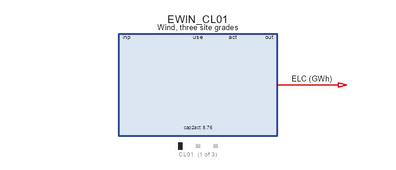
autoplot() on a process plots its declared data rather
than its structure, so the per-grade differences show up directly:
autoplot(EWIN)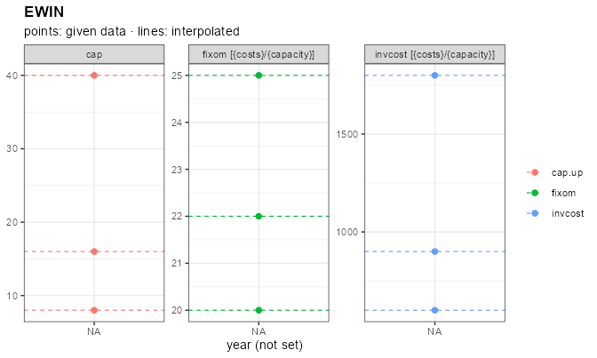
On a solved scenario autoplot() takes
by = "cluster" (or "vintage"), which is the
reason members carry a provenance label at all:
autoplot(
object = scen_clu,
type = "capacity",
comm = "ELC",
by = "cluster"
)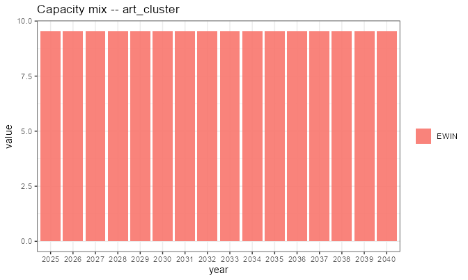
Levelized cost per member
The build order above – grade 01 to its ceiling, then 02, never 03 –
is an outcome of the solve. levcost() shows the
cause, and it needs no model at all: a technology plus its own
costs is enough for a closed-form LCOE.
lc <- levcost(
object = EWIN,
by_variant = TRUE
)
lc <- as.data.frame(lc)
lc[lc$year == 2030, c("variant", "cluster", "comm", "levcost")] # USD/MWh
#> variant cluster comm levcost
#> 5 EWIN_CL01 01 ELC 15.87303
#> 30 EWIN_CL02 02 ELC 29.70016
#> 55 EWIN_CL03 03 ELC 79.24161The ordering is the whole explanation: grade 01 is the cheapest electricity in the model, 02 is worth building once 01 is exhausted, and 03 at roughly five times the cost of 01 never competes with a 1200 MUSD/GW gas plant. The cluster declaration and the solved result are two views of one ranking.
Without by_variant the result keeps its class and plots
directly, one series per member:
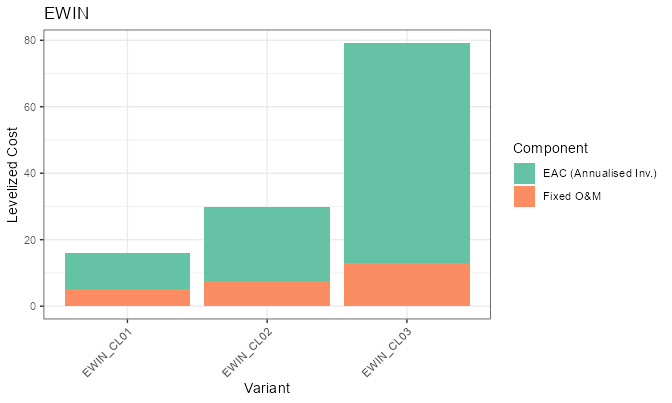
A vintaged technology works the same way, which is how you see a learning curve before solving anything:
lc_pp <- levcost(
object = PP,
by_variant = TRUE
)
lc_pp <- as.data.frame(lc_pp)
lc_pp[lc_pp$year == 2040, c("variant", "vintage", "comm", "levcost")]
#> variant vintage comm levcost
#> 15 PP_VIN2025 2025 ELC 22.27789
#> 45 PP_VIN2035 2035 ELC 12.15158The two axes together
A technology may carry both, and expansion takes the grid: one
process per (vintage, cluster) cell.
ECOA <- newTechnology(
name = "ECOA",
input = data.frame(comm = "COA", unit = "PJ"),
output = data.frame(comm = "ELC", unit = "GWh"),
vintage = data.frame(
vintage = c("2025", "2035"),
start = c(2025, 2035),
end = 2050,
olife = 40L
),
cluster = data.frame(cluster = c("PLAIN", "CCS")),
# a row may select on either axis; NA broadcasts over that axis
ceff = data.frame(
vintage = c(NA, NA, "2035"),
cluster = c("PLAIN", "CCS", "CCS"),
comm = "ELC",
cact2cout = c(0.42, 0.33, 0.36) # CCS improves in the 2035 vintage
),
invcost = data.frame(invcost = 1500),
cap2act = 8.76
)
# -> ECOA_VIN2025_CLPLAIN, ECOA_VIN2025_CLCCS,
# ECOA_VIN2035_CLPLAIN, ECOA_VIN2035_CLCCSTwo rules make these tables readable:
- an
NAin a selector column broadcasts to every member on that axis, so you write a row once and override it only where a member differs; - a row whose selector is the literal
"TOTAL"is not a member at all – it is a bound on the family, which becomes a constraint across the expanded processes rather than data on one of them.
A cluster label here is a kind (PLAIN,
CCS), not a resource tier, so the ordinal convention does
not apply: nothing else in the model carries the token.
Clustered resources: tiers that must not pool
Grades on a process get you most of the way, but two things sit outside the process and need the same treatment.
Weather tiers
A graded wind resource usually has a different
profile per grade, not just a different ceiling.
Declare the tiers on the weather object and keep one object
for the whole set:
WWIN <- newWeather(
name = "WWIN",
desc = "Wind capacity factor by site grade",
timeframe = "SEASON",
unit = "share",
cluster = data.frame(
cluster = c("01", "02"),
desc = c("good sites", "poor sites"),
region = NA_character_,
order = 1:2
),
weather = data.frame(
cluster = rep(c("01", "02"), each = 2),
region = "R1",
year = 2025L,
timeslice = rep(c("WIN", "SUM"), 2),
wval = c(0.9, 0.6, 0.45, 0.3)
)
)
EWIN_W <- newTechnology(
name = "EWIN",
output = data.frame(comm = "ELC", unit = "GWh"),
cluster = data.frame(cluster = c("01", "02"), region = NA_character_),
capacity = data.frame(cluster = c("01", "02"), cap.up = 10),
invcost = data.frame(cluster = c("01", "02"), invcost = 600),
# ONE link row per tier, each naming the same object
weather = data.frame(
cluster = c("01", "02"),
weather = "WWIN",
waf.up = 1
),
vintage = data.frame(olife = 25L),
cap2act = 8.76
)
repo_w <- newRepository(
name = "repo_w",
GAS, ELC, SUP_GAS, IMP_ELC, DEM_SMALL, PP_flat, WWIN, EWIN_W
)
mod_w <- newModel(
name = "art_weather",
repo = repo_w,
calendar = cal,
region = "R1",
horizon = newHorizon(c(2025, 2030)),
discount = 0.05
)
scen_w <- interpolate_model(mod_w, name = "art_weather", ondisk = FALSE)
pw <- getData(scen_w, name = "pWeather", merge = TRUE)
unique(as.data.frame(pw)$weather)
#> [1] "WWIN_CL01" "WWIN_CL02"Each tier became an ordinary weather object, WWIN_CL01
and WWIN_CL02, and the process variants read one each:
link <- getData(scen_w, name = "pTechWeatherAf", merge = TRUE)
link <- as.data.frame(link)
unique(link[, c("tech", "weather", "cluster")])
#> tech weather cluster
#> 1 EWIN_CL01 WWIN_CL01 01
#> 2 EWIN_CL02 WWIN_CL02 02The link shows up on the drawing as a weather box against the
technology, and the tiers themselves plot straight from the object –
pass the calendar so the timeslices are laid out rather
than taken as labels:
draw(EWIN_W)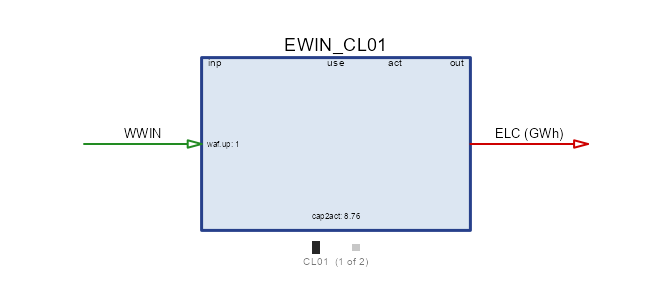
autoplot(object = WWIN, calendar = cal)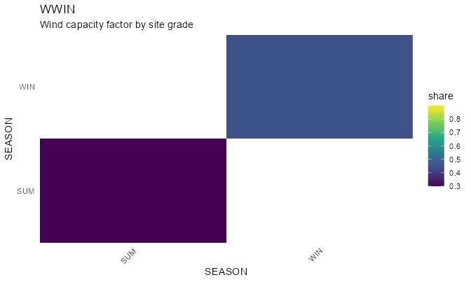
A consumer finds its tier by cluster name – the
reason the label is built once and shared. A link row carrying
cluster = "01" reads the 01 rows; a link to an
unclustered weather object is untouched (so a single shared
profile keeps working exactly as before); and a link to a clustered
object with no cluster is an error, because a multiplicative factor has
no “every tier at once” reading. Tiers compose with
transform, giving WWIN_CL01_<transform>:
the cluster picks the series, the transform derives from it.
Commodity tiers, and why they are needed
Now the harder half. Suppose each wind grade needs
land, and land is finite per grade. The obvious move –
one LAND commodity, one supply object with three clusters –
does not bind per grade:
The commodity balance is keyed on
(comm, region, year, timeslice)and carries no cluster. Every producer of one commodity name writes into the same cell, so three supply clusters pour into one pool and grade-01 wind can draw grade-03 land.
The commodity name is the only tier-carrying key the balance has, so the tiers belong on the commodity:
LAND <- newCommodity(
name = "LAND",
timeframe = "ANNUAL",
unit = "kha",
cluster = data.frame(cluster = c("01", "02", "03"), order = 1:3)
)
RES_LAND <- newSupply(
name = "RES_LAND",
commodity = "LAND",
cluster = data.frame(
cluster = c("01", "02", "03"),
region = NA_character_,
order = 1:3
),
supply = data.frame(
cluster = c("01", "02", "03"),
ava.up = 4, # kha available per grade
cost = c(1, 2, 3) # MUSD/kha
)
)
EWIN_L <- newTechnology(
name = "EWIN",
input = data.frame(comm = "LAND", unit = "kha"),
output = data.frame(comm = "ELC", unit = "GWh"),
cluster = data.frame(cluster = c("01", "02", "03"), region = NA_character_),
ceff = data.frame(
cluster = c("01", "02", "03"),
comm = "ELC",
cact2cout = c(1, 0.8, 0.5)
),
capacity = data.frame(cluster = c("01", "02", "03"), cap.up = 100),
invcost = data.frame(cluster = c("01", "02", "03"), invcost = 0.1),
vintage = data.frame(olife = 30L),
cap2act = 1
)
DEM_LAND <- newDemand(
name = "DEM_ELC",
commodity = "ELC",
demand = data.frame(demand = 3)
)
repo_land <- newRepository(
name = "repo_land",
ELC, IMP_ELC, DEM_LAND, LAND, RES_LAND, EWIN_L
)
mod_land <- newModel(
name = "art_land",
repo = repo_land,
calendar = cal,
region = "R1",
horizon = newHorizon(c(2025, 2030)),
discount = 0.05
)
scen_land <- solve_model(
object = mod_land,
name = "art_land",
ondisk = FALSE,
overwrite = TRUE,
echo = FALSE
)
# one declaration, three commodities -- and one supply object, three processes
ava <- getData(scen_land, name = "pSupAva", merge = TRUE)
ava <- as.data.frame(ava)
unique(ava[, c("sup", "comm", "cluster")])
#> sup comm cluster
#> 1 RES_LAND_CL01 LAND_CL01 01
#> 7 RES_LAND_CL02 LAND_CL02 02
#> 13 RES_LAND_CL03 LAND_CL03 03One declaration became three commodities, each with its own balance. The supply object likewise became one process per tier, and every tier draws only its own:
inp <- getData(scen_land, name = "vTechInp", merge = TRUE)
aggregate(value ~ tech + comm, inp, sum) # kha
#> tech comm value
#> 1 EWIN_CL01 LAND_CL01 24
#> 2 EWIN_CL02 LAND_CL02 15
draw(EWIN_L)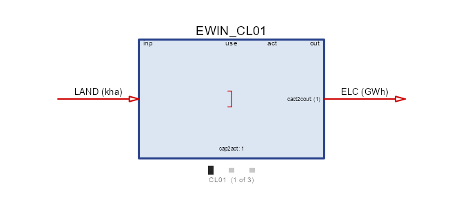
The land input is one arrow on the box, and the tiers that feed it
are a property of the resource, not of the process.
autoplot() on the supply object shows what each tier has
and what it costs:
autoplot(object = RES_LAND, style = "bar")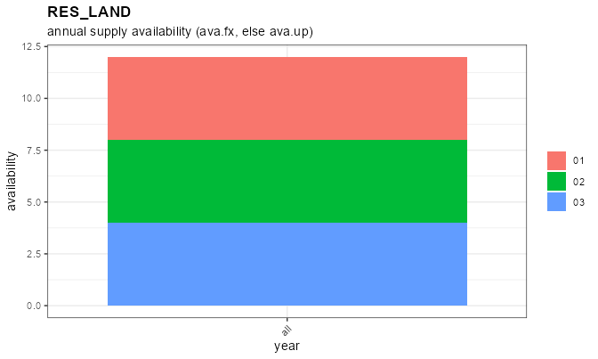
EWIN_CL01 exhausts LAND_CL01 and
EWIN_CL02 starts on LAND_CL02; no variant ever
touches another tier’s land. The bound bites where you declared it, from
one commodity and one supply object –
which matters because supply@commodity is a single name, so
without tiered commodities a tier set means one supply object per
tier.
ELC in the same model has no clusters and is therefore
shared by every variant, with no flag anywhere. That is the rule in
general: tiering is opt-in on the resource, and a
reference to an unclustered object is left alone.
Tiers that differ in data, not just in name
Land tiers differ only in how much there is. Fuel grades differ in
what they are: anthracite and lignite are the same commodity in
a model’s structure and not at all the same in carbon content. So
@emis, @agg and @property carry a
cluster column too, with the broadcast rule you have seen
everywhere else – a row with no cluster is shared by every tier:
COA <- newCommodity(
name = "COA",
timeframe = "ANNUAL",
unit = "PJ",
cluster = data.frame(
cluster = c("01", "02"),
desc = c("anthracite", "lignite"),
order = 1:2
),
emis = data.frame(
cluster = c("01", "02", NA), # NA: the last row is shared
comm = c("CO2", "CO2", "SO2"),
emis = c(0.090, 0.110, 0.001) # kt per PJ; 02 is the dirtier grade
)
)
CO2 <- newCommodity(
name = "CO2",
timeframe = "ANNUAL",
unit = "kt",
limtype = "UP"
)
SO2 <- newCommodity(
name = "SO2",
timeframe = "ANNUAL",
unit = "kt",
limtype = "UP"
)
SUP_COA <- newSupply(
name = "SUP_COA",
commodity = "COA",
cluster = data.frame(cluster = c("01", "02"), region = NA_character_),
supply = data.frame(
cluster = c("01", "02"),
ava.up = 100,
cost = c(3, 1) # the dirty grade is the cheap one
)
)
PP_COA <- newTechnology(
name = "PP_COA",
input = data.frame(comm = "COA", unit = "PJ"),
output = data.frame(comm = "ELC", unit = "GWh"),
cluster = data.frame(cluster = c("01", "02"), region = NA_character_),
ceff = data.frame(cluster = c("01", "02"), comm = "ELC", cact2cout = 0.4),
capacity = data.frame(cluster = c("01", "02"), cap.up = 100),
invcost = data.frame(cluster = c("01", "02"), invcost = 1),
vintage = data.frame(olife = 30L),
cap2act = 1
)
repo_coal <- newRepository(
name = "repo_coal",
ELC, CO2, SO2, IMP_ELC, DEM_LAND, COA, SUP_COA, PP_COA
)
mod_coal <- newModel(
name = "art_coal",
repo = repo_coal,
calendar = cal,
region = "R1",
horizon = newHorizon(c(2025, 2030)),
discount = 0.05
)
scen_coal <- interpolate_model(mod_coal, name = "art_coal", ondisk = FALSE)
ef <- getData(scen_coal, name = "pEmissionFactor", merge = TRUE)
ef <- as.data.frame(ef)
ef[, c("comm", "commp", "value")] # kt per PJ
#> comm commp value
#> 1 CO2 COA_CL01 0.090
#> 2 SO2 COA_CL01 0.001
#> 3 CO2 COA_CL02 0.110
#> 4 SO2 COA_CL02 0.001
draw(PP_COA)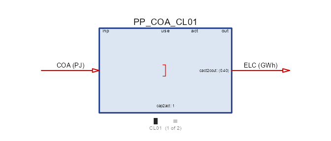
and the commodity itself plots its grades, which is where the difference between the two fuels actually lives:
autoplot(object = COA)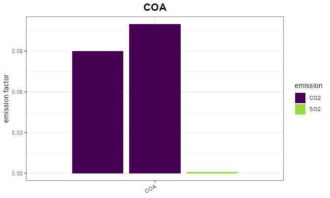
Each grade carries its own CO2 factor and both inherit the one shared SO2 row. A grade is now a genuinely different fuel: cheap lignite with a high carbon factor against costlier anthracite, and a CO2 cap decides which one runs.
Declared labels are authoritative here too, and the declaration is
required: a label that appears in a data slot but not in the
cluster roster is a typo and an error, and so is a data
slot carrying labels with no roster at all. The alternative – harvesting
the labels – made a silent extra grade out of one stray row.
Two tier sets that do not line up
The sections above tiered one thing at a time, and the rosters lined up by design. A real wind resource rarely obliges. Land comes in grades that are finite per region, because land is where the turbine stands; the wind regime that drives output is a property of a much larger area, and the two have nothing to do with each other – the best land in a country can sit in either regime.
So: a two-level geoscale, land declared at the fine level, wind declared at the coarse one.
gs_two <- geoscale_from_leaftable(
data.frame(
country = c("CO", "CO"),
region = c("R1", "R2")
),
geoframes = c("country", "region"),
key = "region",
name = "two_level"
)The two regimes are declared once, at the country level, and each is an ordinary unclustered weather object:
WWIN_COAST <- newWeather(
name = "WWIN_COAST",
desc = "Coastal wind regime",
timeframe = "SEASON",
unit = "share",
weather = data.frame(
region = "CO",
timeslice = c("WIN", "SUM"),
wval = c(0.55, 0.25)
)
)
WWIN_INLAND <- newWeather(
name = "WWIN_INLAND",
desc = "Inland wind regime",
timeframe = "SEASON",
unit = "share",
weather = data.frame(
region = "CO",
timeslice = c("WIN", "SUM"),
wval = c(0.20, 0.45)
)
)Land is a tiered commodity at geoframe = "region", and
the potential of each grade differs by region – R2 has
almost no best-grade land:
LAND_WIN <- newCommodity(
name = "LAND_WIN",
desc = "Developable wind land by site grade",
timeframe = "ANNUAL",
geoframe = "region",
unit = "kha",
cluster = data.frame(
cluster = c("01", "02", "03"),
desc = c("best", "fair", "poor"),
order = 1:3
)
)
RES_LAND_WIN <- newSupply(
name = "RES_LAND_WIN",
commodity = "LAND_WIN",
cluster = data.frame(
cluster = c("01", "02", "03"),
region = NA_character_,
order = 1:3
),
supply = data.frame(
cluster = rep(c("01", "02", "03"), each = 2),
region = rep(c("R1", "R2"), times = 3),
ava.up = c(20, 3, 30, 40, 100, 100), # kha, by grade and region
cost = 0
)
)Now the technology. Its clusters are the land
grades, because that is the axis its own capacity is limited on. The
regime comes in through the weather table, one row per
cluster, each naming whichever country-level object applies:
EWIN_SITE <- newTechnology(
name = "EWIN_SITE",
desc = "Wind, one variant per site grade",
output = data.frame(comm = "ELC", unit = "GWh"),
aux = data.frame(acomm = "LAND_WIN", unit = "kha"),
cluster = data.frame(
cluster = c("01", "02", "03"),
desc = c("best sites", "fair sites", "poor sites"),
region = NA_character_,
order = 1:3
),
vintage = data.frame(olife = 25L),
invcost = data.frame(
cluster = c("01", "02", "03"),
invcost = c(900, 1000, 1300) # MUSD/GW
),
aeff = data.frame(
cluster = c("01", "02", "03"),
acomm = "LAND_WIN",
ncap2ainp = c(2, 3, 5) # kha of land per GW built
),
# the second axis: grades 01 and 03 are coastal, 02 is inland
weather = data.frame(
cluster = c("01", "02", "03"),
weather = c("WWIN_COAST", "WWIN_INLAND", "WWIN_COAST"),
waf.up = 1
),
cap2act = 8.76 # GW -> GWh/year
)Two flows and one regime per member, which is what the drawing says: electricity out, land in as an auxiliary flow charged against new capacity.
draw(EWIN_SITE)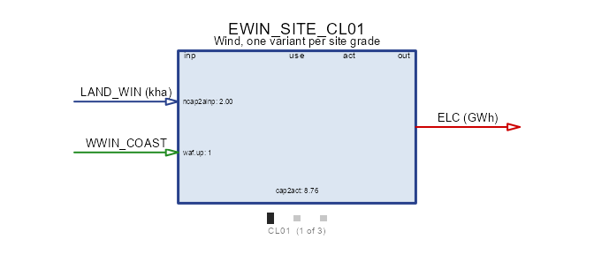
The regimes are ordinary series, and plotting them side by side is the clearest statement that they are not orderable the way grades are – one peaks in winter, the other in summer:
autoplot(object = WWIN_COAST, calendar = cal)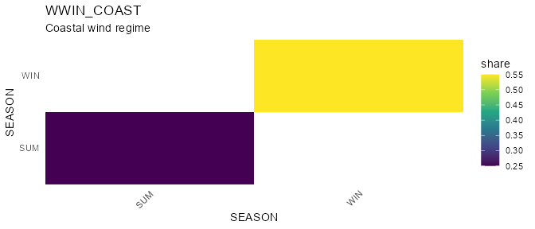
autoplot(object = WWIN_INLAND, calendar = cal)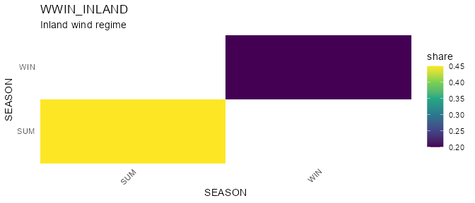
That weather table is the whole trick, and it works
because a link to an unclustered weather object is left
alone: the cluster label picks the row, and the row
names the object. The regimes therefore need no relationship to the land
grades – two of the three grades share one regime here.
DEM_WIND <- newDemand(
name = "DEM_WIND",
commodity = "ELC",
demand = data.frame(
region = c("R1", "R1", "R2", "R2"),
timeslice = c("WIN", "SUM", "WIN", "SUM"),
demand = 8 # GWh per slice
)
)
repo_site <- newRepository(
name = "repo_site",
ELC, IMP_ELC, DEM_WIND, LAND_WIN, RES_LAND_WIN,
WWIN_COAST, WWIN_INLAND, EWIN_SITE
)
mod_site <- newModel(
name = "art_sites",
repo = repo_site,
calendar = cal,
region = c("R1", "R2"),
geoscale = gs_two,
horizon = newHorizon(2025),
discount = 0.05
)
scen_site <- solve_model(
object = mod_site,
name = "art_sites",
ondisk = FALSE,
overwrite = TRUE,
echo = FALSE
)
getVariants(scen_site)
#> name class base vintage cluster
#> 1 RES_LAND_WIN_CL01 supply RES_LAND_WIN <NA> 01
#> 2 RES_LAND_WIN_CL02 supply RES_LAND_WIN <NA> 02
#> 3 RES_LAND_WIN_CL03 supply RES_LAND_WIN <NA> 03
#> 4 EWIN_SITE_CL01 technology EWIN_SITE <NA> 01
#> 5 EWIN_SITE_CL02 technology EWIN_SITE <NA> 02
#> 6 EWIN_SITE_CL03 technology EWIN_SITE <NA> 03Each regime is stored once, at the country level, however many regions read it:
pw <- getData(scen_site, name = "pWeather", merge = TRUE)
unique(as.data.frame(pw)[, c("weather", "region")])
#> weather region
#> 1 WWIN_COAST CO
#> 3 WWIN_INLAND COand each grade reads the one its link row names:
link <- getData(scen_site, name = "pTechWeatherAf", merge = TRUE)
link <- as.data.frame(link)
unique(link[, c("tech", "weather", "cluster")])
#> tech weather cluster
#> 1 EWIN_SITE_CL01 WWIN_COAST 01
#> 2 EWIN_SITE_CL02 WWIN_INLAND 02
#> 3 EWIN_SITE_CL03 WWIN_COAST 03The solution shows both axes at work at once:
cap <- getData(scen_site, name = "vTechNewCap", merge = TRUE)
aggregate(value ~ tech + region, as.data.frame(cap), sum) # GW
#> tech region value
#> 1 EWIN_SITE_CL01 R1 2.3120051
#> 2 EWIN_SITE_CL02 R1 2.7744061
#> 3 EWIN_SITE_CL01 R2 1.5000000
#> 4 EWIN_SITE_CL02 R2 2.7744061
#> 5 EWIN_SITE_CL03 R2 0.8120051
land <- getData(scen_site, name = "vTechAInp", merge = TRUE)
aggregate(value ~ tech + comm + region, as.data.frame(land), sum) # kha
#> tech comm region value
#> 1 EWIN_SITE_CL01 LAND_WIN_CL01 R1 4.624010
#> 2 EWIN_SITE_CL02 LAND_WIN_CL02 R1 8.323218
#> 3 EWIN_SITE_CL01 LAND_WIN_CL01 R2 3.000000
#> 4 EWIN_SITE_CL02 LAND_WIN_CL02 R2 8.323218
#> 5 EWIN_SITE_CL03 LAND_WIN_CL03 R2 4.060025
out <- getData(scen_site, name = "vTechOut", merge = TRUE)
aggregate(value ~ tech + timeslice, as.data.frame(out), sum) # GWh
#> tech timeslice value
#> 1 EWIN_SITE_CL01 SUM 4.1741456
#> 2 EWIN_SITE_CL02 SUM 10.9367089
#> 3 EWIN_SITE_CL03 SUM 0.8891456
#> 4 EWIN_SITE_CL01 WIN 9.1831203
#> 5 EWIN_SITE_CL02 WIN 4.8607595
#> 6 EWIN_SITE_CL03 WIN 1.9561203The same two tables as figures. The resource first –
style = "regions" is the view that matters here, because
the whole point is that a grade’s ceiling is a different number in each
region:
autoplot(object = RES_LAND_WIN, style = "regions")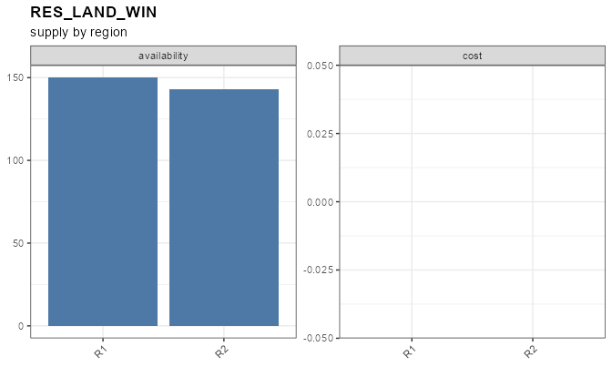
and then what was built, folded on the cluster axis:
autoplot(
object = scen_site,
type = "new_capacity",
comm = "ELC",
by = "cluster"
)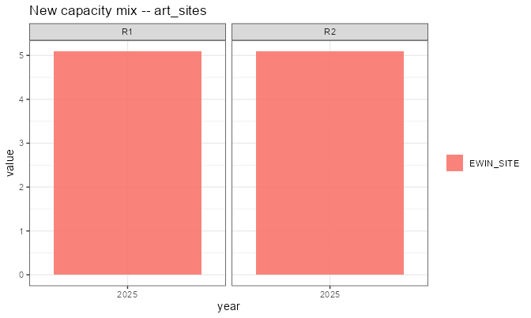
autoplot(
object = scen_site,
type = "generation",
comm = "ELC",
by = "cluster"
)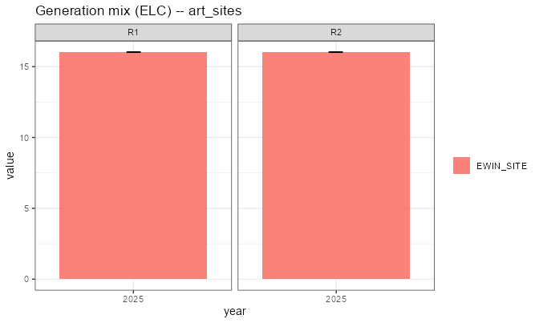
Read the land table first: R2 takes 3.000
kha of grade 01, which is exactly what it has, and then
falls back to grade 03 – while R1, with 20 kha
of the same grade, never gets near its limit. The tier bound bit
per region, which is why land had to be a regional
commodity.
Then the generation table: winter output comes mostly from grades
01 and 03 and summer output mostly from
02. That is the regime assignment, not the land quality –
the model is holding a seasonally complementary portfolio because the
second axis cuts across the first.
Two notes on the alternative. If the regimes do coincide with the grades, a clustered weather object is tidier: give it the same labels and one link row, exactly as in Weather tiers above. And if they do not coincide but you cluster the weather anyway, the rosters must still match label for label, or interpolation refuses the model:
technology "EWIN_SITE_CL01" references weather "WWIN" with cluster "01", which
that weather does not declare (it has "COAST", "INLAND"). The consumer decides
which clusters exist, so the weather must cover every one it is asked for.That is the right error: a multiplicative factor has no “pick one for me” reading. The fix is either to align the labels or, as here, to let the regimes be plain objects and name them per row.
Reading a family back
Four calls, in increasing order of aggregation:
getVariants(scen) # the provenance table
getVariants(scen, class = "technology") # one class
getData(scen, name = "vTechCap", variants = TRUE) # results + provenance
variantSummary(scen, name = "vTechCap", by = "cluster") # folded on one axisThe same call takes a model, which answers the question a constraint or a levy asks before anything is solved – what will the members be called?
getVariants(mod_site)
#> name class base vintage cluster
#> 1 RES_LAND_WIN_CL01 supply RES_LAND_WIN <NA> 01
#> 2 RES_LAND_WIN_CL02 supply RES_LAND_WIN <NA> 02
#> 3 RES_LAND_WIN_CL03 supply RES_LAND_WIN <NA> 03
#> 4 EWIN_SITE_CL01 technology EWIN_SITE <NA> 01
#> 5 EWIN_SITE_CL02 technology EWIN_SITE <NA> 02
#> 6 EWIN_SITE_CL03 technology EWIN_SITE <NA> 03Those names are minted from the model’s own
variant_prefix and recorded in the scenario, and
validate_scenario_parameters() re-derives every one of them
from its (base, vintage, cluster) cell: a provenance table
that disagrees with the process names is refused rather than read. The
table is the one place to look – never the name itself.
getData(..., variants = TRUE) adds the provenance
columns to the results, which is usually what you want for plotting:
group by base to draw the family, by cluster
to compare grades.
Pitfalls
The roster is required, on both axes. A
cluster or vintage label used in any data slot
must appear in @cluster / @vintage, or the
object is refused – the error names the labels, the slots they came
from, and the declaration to paste. The roster is the authoritative set,
so a misspelling is a typo rather than an extra member built with
defaults for everything it does not carry (no investment cost, no
capacity bound: free and unlimited). It is also the only place
region and order can be stated.
A tier roster must cover what the processes ask for. The consumer decides which tiers exist; a process asking a clustered weather or commodity for a tier it does not declare is an error naming both sides. The reverse is allowed: a declared tier nobody references is still materialized, so its data stays inspectable rather than vanishing.
“Cluster” means something else in region
aggregation. In
aggregate_model_regions(clusters = ) a cluster is a
group of regions being merged – see the multi-level region
article. The two never interact; the collision is only in the English
word.
Names are data. A member’s name is a solver set
member, so renaming variant_prefix mid-project changes
every result label, every levy target and every golden. Pick it once per
model.